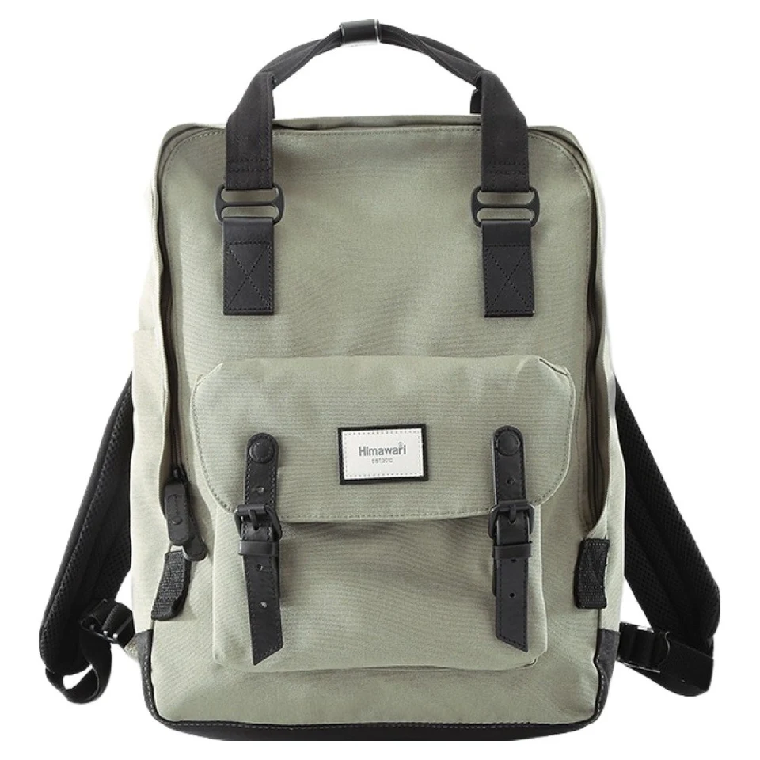

도시락을 백팩에 넣기 전: 용기의 바닥과 꺼내는 방향 확인하기

책과 노트북은 세워 담지만 도시락 용기는 똑바로 놓고 싶은 물건입니다. 익숙한 출근 짐 사이에 빈틈이 있다고 곧바로 끼워 넣기보다, 용기가 놓이는 방향과 밖으로 꺼내는 과정을 먼저 생각해 보세요. 이 글은 용기의 배치에 관한 이야기이며 음식의 보관 조건은 별도로 확인해야 합니다.
빈 용기로 먼저 맞춰 보기
실제 도시락을 담기 전에 빈 용기에 뚜껑과 잠금 장치를 모두 닫은 상태로 시험합니다. 가방 입구를 통과하는지, 바닥에 놓았을 때 한쪽이 들리지 않는지 확인하세요. 내용물을 담은 뒤 방향을 억지로 바꾸기보다 비어 있을 때 배치를 정하는 편이 단순합니다. 손잡이나 돌출된 잠금 부품까지 크기에 포함합니다.
평평한 자리와 압력을 함께 보기
용기 아래에 둥근 충전기나 물병이 놓이면 바닥이 기울 수 있습니다. 평평하게 놓을 자리를 정하고 위에서 무거운 책이 누르지 않도록 짐의 구성을 조정합니다. 가방을 세웠을 때만 괜찮은지, 내려놓고 여는 과정에서도 방향을 유지할 수 있는지 살펴보세요. 필요한 자리가 나지 않으면 전용 운반 가방을 따로 쓰는 편이 낫습니다.
전자기기와 종이류에서 분리하기
뚜껑이 있는 용기라고 해서 어떤 움직임에서도 새지 않는다고 단정하지 않습니다. 용기 제조사의 밀폐와 운반 안내를 확인하고, 전자기기와 서류에 직접 닿지 않는 별도 공간을 준비하세요. 백팩의 생활방수 표시와 용기의 누수 방지는 다른 문제입니다. 보냉이 필요하다면 음식과 용기에 맞는 보관 안내를 별도로 따라야 합니다.
먹은 뒤 되담는 과정까지 정하기
사용한 용기를 바로 다른 물건 사이에 끼우지 말고 겉면과 뚜껑 상태를 확인한 뒤 준비한 운반 주머니에 담습니다. 집에서는 용기와 주머니를 꺼내 각 관리 안내에 따라 정리합니다. 다음 날 넣을 때도 용기 크기나 구성이 달라졌다면 다시 배치를 확인하세요. 가방에 맞추려고 용기 뚜껑을 누르는 방식은 피합니다.
참고·안내
- Himawari No.1010 제품 정보
- Himawari No.1010 실제 제품 사진입니다. 본문은 일반적인 사용 장면의 예시이며 수납 사양을 보증하지 않습니다.
자주 묻는 질문
사진 속 가방의 수납 크기는 어떻게 확인하나요?
이미지의 비율만으로 수납 가능 여부를 판단하지 말고, 선택한 옵션의 실제 치수와 입구 형태를 제품 안내 또는 문의로 확인하세요.